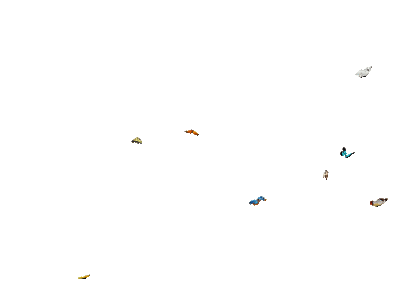
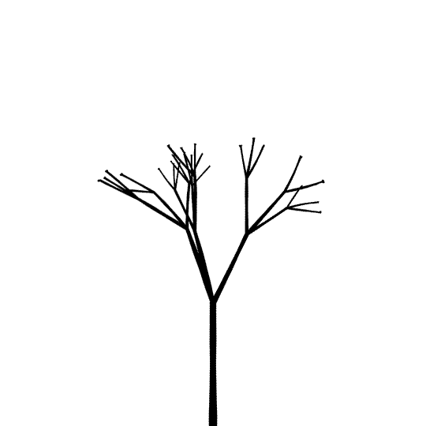
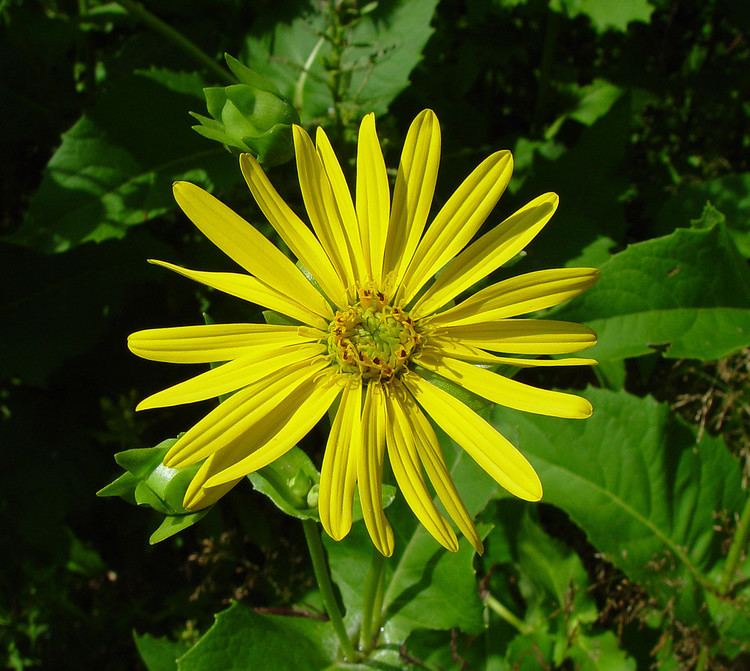
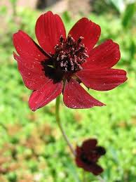
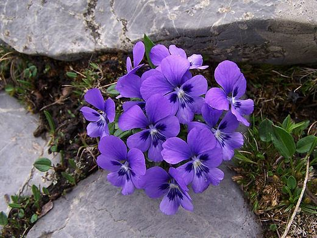
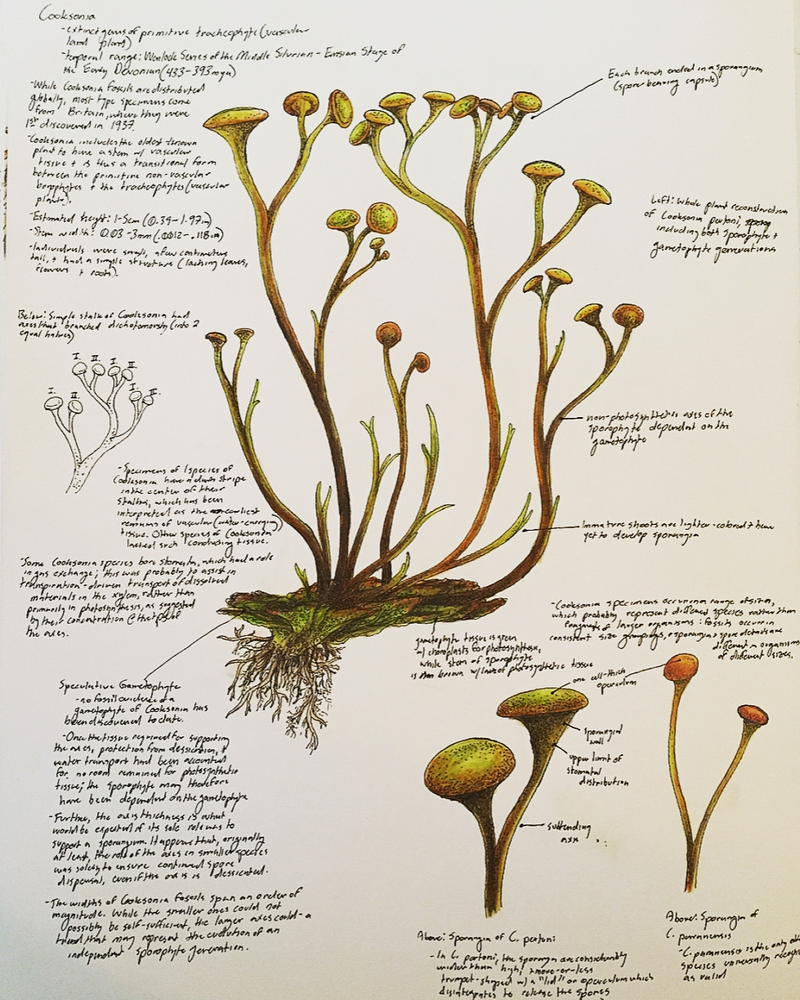
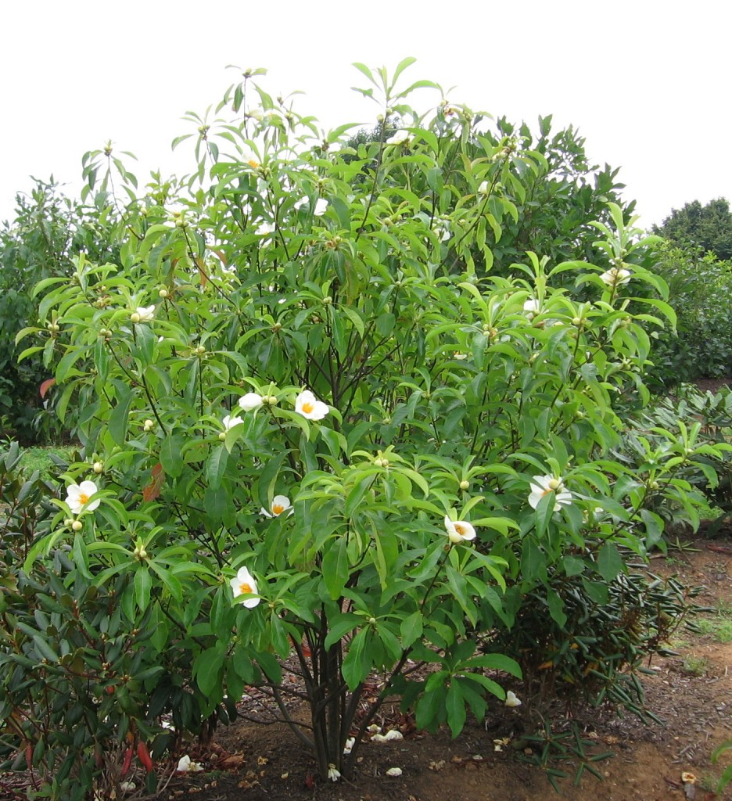
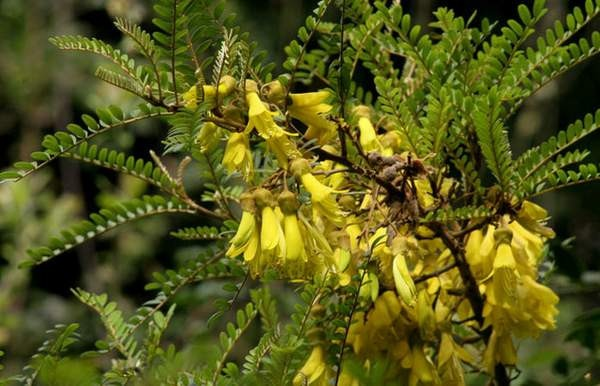

|  |
|---|
|  |
|---|
- Silphium
If you were somehow able to stumble upon this flower, you may mistake it for a daisy. With its many small, long, yellow petals, the silphium looks like the cousin of yellow daisies. However, the flower has not been seen by humans since it went extinct in the 1st Century B.C.

- The Saint Helena Mountain Bush
Found exclusively on the island of Saint Helena, the appropriately named Saint Helena Mountain Bush disappeared from the island after population size more than doubled in just a few years.

- The Cry Violet
Tears were surely shed for this beautiful plant once it could no longer be found in the wild by the mid-1930s and was completely extinct by the 1950s. The cry violet, which was found exclusively in France, was driven to extinction after it was picked faster than it could be planted.

- Cooksonia
Believed to be one of the first plants on the planet, cooksonia lived more than 425 million years ago (to put that in perspective, dinosaurs lived around 66 million years ago). These water-loving plants could be found along coastlines all over the world. Even more interestingly, scientists believe these were the first plants to have a stem.

- The Franklin Tree
Once found only along the Altamaha River in Georgia, the Franklin Tree was discovered in the mid-1700s and quickly named after Benjamin Franklin. However, roughly 50 years after being discovered, the plant went extinct. Though the exact reason behind why the plant went extinct still remains a mystery, scientists believe it was because chemicals from nearby cotton plantations leaked into the river and destroyed the local soil.

- Toromiro Tree
Unlike many others on this list, this tree is what’s known as “extinct in the wild.” Originally found on the remote island Easter Island, the Toromiro tree could no longer be found in its native habitat by the 1800s, thanks to deforestation. However, a few seeds were recovered before the tree went extinct and were planted in greenhouses and controlled gardens in Europe. So while the toromiro tree still exists on planet Earth, it’s believed it will never grow in a natural environment again.
